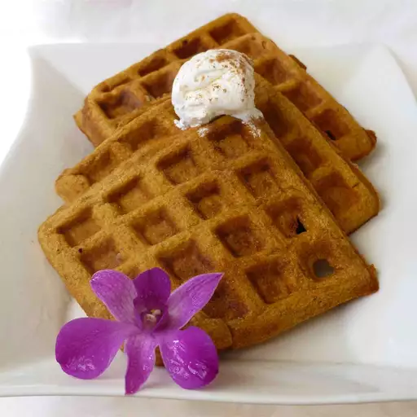

Cinnamon Pumpkin Waffles

Description
These quick and easy waffles will be sure to delight on a chilly
fall morning (or any time of year!). This recipe makes about 8 waffles.
Recipe Source
Ingredients
- 1 cup whole wheat flour
- 1/4 cup wheat germ
- 1/3 cup white sugar
- 1 teaspoon ground cinnamon
- 1 teaspoon pumpkin spice
- 1/2 teaspoon ground nutmeg
- 1 tablespoon baking powder
- 3/4 cup milk
- 1/2 cup pumpkin puree
- 2 tablespoons melted butter
- 2 tablespoons olive oil
- 1/2 cup unsweetened applesauce
- 1 egg
- 1 egg white
- 1/2 cup chopped pecans
Directions
- Preheat a waffle iron according to
manufacturer's instructions. Combine flour,
wheat germ, sugar, cinnamon, pumpkin pie
spice, nutmeg, salt, and baking powder in
a bowl. Set aside.
- Beat together milk, pumpkin puree, butter,
oil, applesauce, whole egg, and egg white.
Stir flour mixture into the pumpkin mixture
along with the pecans.
- Ladle the batter onto the preheated waffle
iron. Cook the waffles until golden and crisp,
5 to 7 minutes.